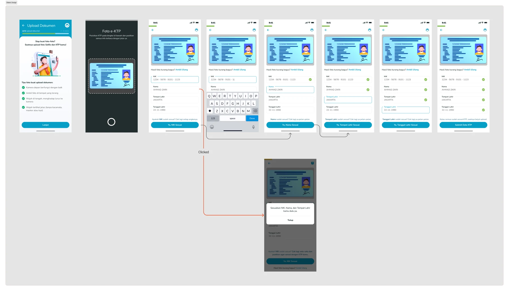
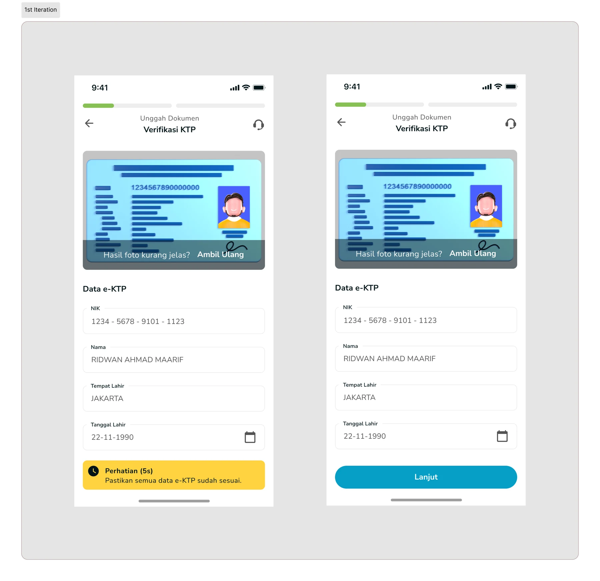
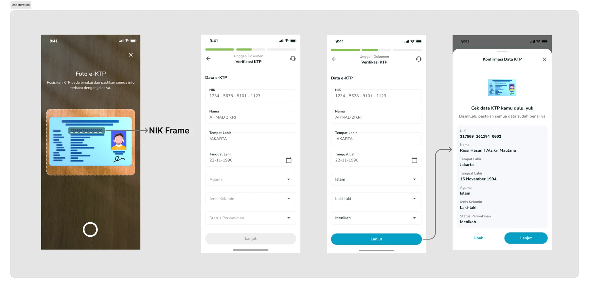
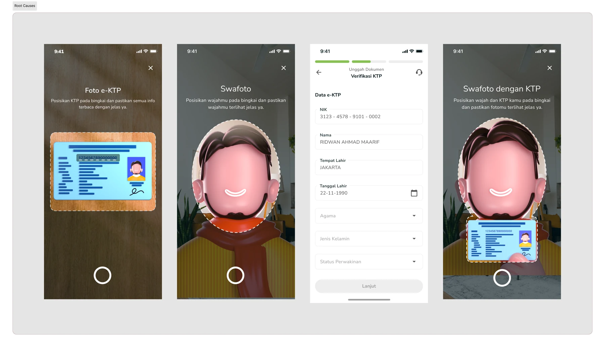
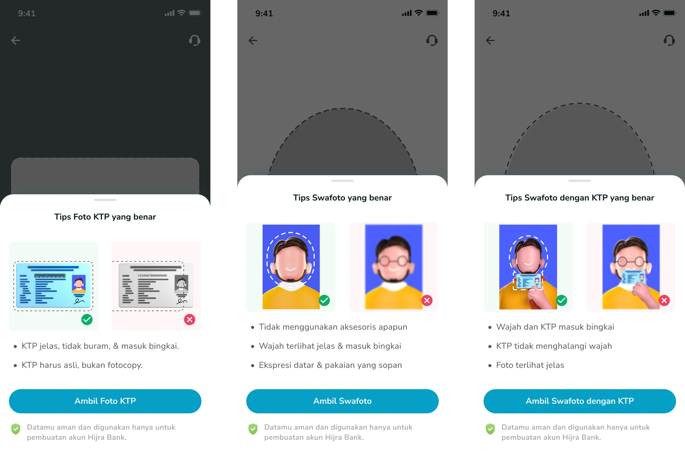

Making identity verification easier to get right
Three iterations of Hijra's ID check. Clearer capture guidance and an explicit review step moved more new customers to automatic approval instead of manual review.
My part: I owned all three iterations, from capture guidance to review and recovery, working with the PM, engineers, operations and compliance.
- Role
- Product and interaction designer
- Years
- 2022 to 2024
- Team
- PM, engineering, operations, compliance
- Outcome
- +16% automated approvals

The problem: people did not check what the OCR read
Hijra's low approval rate pushed registrations into manual review, creating work for operations and support, with up to 100 registration and e-KYC tickets a month.
The cause was human. People trusted the OCR result and skipped checking the details it extracted from their ID. Errors that took seconds to fix turned into days of manual review.

2022: a countdown before continuing
The first iteration added a five-second review countdown. It tested well in moderated sessions, but in production a timer alone did not make the extracted data clearer. Slowing people down is not the same as helping them check.

2023: an explicit review step
I removed the timer, brought the personal details onto the review screen, added a confirmation sheet and clarified the ID photo frame so captures were sharper from the start.
Automated approvals rose 13%, and we received no complaints about the flow from Q2 to Q4.

2024: helping people recover from errors
A change in the OCR service brought new errors, and regulation limited how quickly we could switch vendors. I redesigned around the constraint: capture guidance for both the ID and the selfie, field-by-field confirmation, and clear failure messages with an easy way to try again.
After three failed attempts, people are routed to manual review rather than stuck.


Outcome
The final iteration shipped at the end of Q4 2024. By February 2025, automated approvals were up 16%, with fewer customers waiting on manual review and less load on operations and support.
What I learned
When software does the reading, design has to make checking easy. The best fixes came from working with operations and compliance, and from being honest about what the verification service could and could not do.
Results as reported in the original project study.